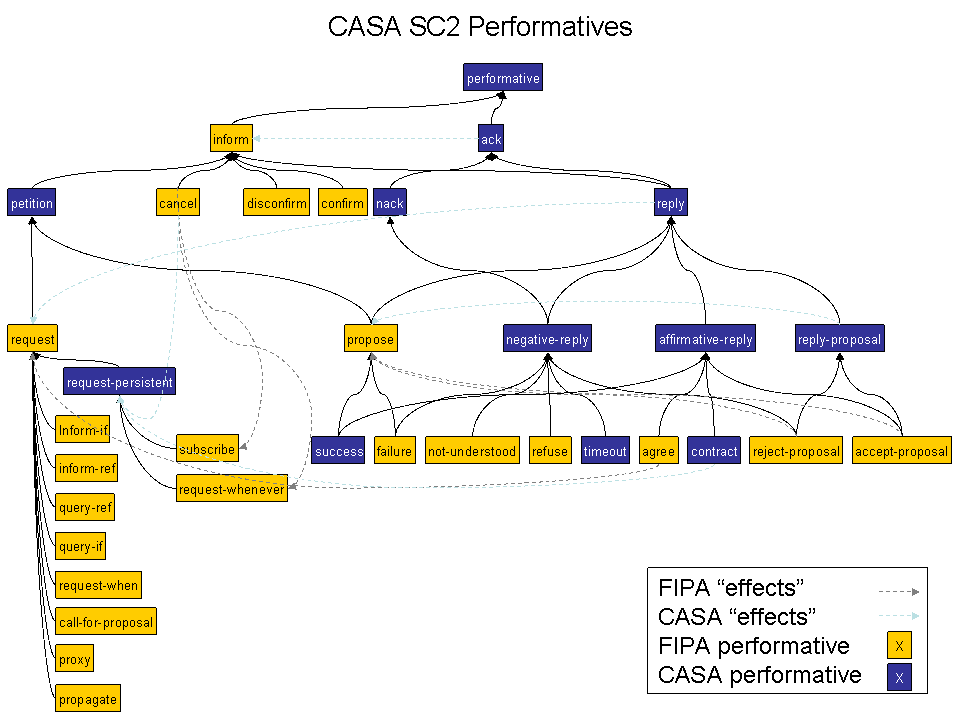

| Copyright: Copyright (c) 2003, Knowledge Science Group, University of Calgary. Permission to use, copy, modify, distribute and sell this software and its documentation for any purpose is hereby granted without fee, provided that the above copyright notice appear in all copies and that both that copyright notice and this permission notice appear in supporting documentation. The Knowledge Science Group makes no representations about the suitability of this software for any purpose. It is provided "as is" without express or implied warranty. |
CASA messages are pure-text messages used by agents to communicate with one another. CASA mesages are represented in the software by the class MLMessage. Currently, CASA supports either XML or KQML formats for messages (see classes XMLMessage and KQMLMessage).
The following table summarizes the CASA message fields:
| Field | Stardard |
Requiried? | Type | Comments |
|---|---|---|---|---|
| performative | FIPA SC00061G |
required | token | the speach act this message represents. The token must occur in the casa ontology as a sub-type of performative. |
| act | optional | token-list | the physical act (the "topic" of this message). The token must occur in the casa ontology as a sub-type of action. (performative <: action) | |
| sender | FIPA SC00061G |
optional but suggested |
URL | the immediate sender of the message. May be missing if the sending agent wishes to remain annonomous. |
| receiver | FIPA SC00061G |
required | URL | the
immediate receiver of the
message. |
| reply-to |
FIPA SC00061G |
optional |
||
| to | optional | { { ["+"] URL | {"{"{URL}+"}"} } | "*" }+ |
path through
which this message is to follow. Used for forwarding
messages. This is a list of URLs and URL sets (designated by
inclosing in {}. URLs listed in serial are taken as sequential
(the message is passed from one URL to the next); if URLs are enclosed
in {}, the message is replicated and passed to each one of them in
parellel; a * has special meaning in Cooperation Domains, and means to
broadcaste the message to all memebers. |
|
| reply-with | FIPA SC00061G |
if |performative| <: request | string | used as a unique marker to match the reply against a request |
| in-reply-to | FIPA SC00061G |
if |performative| <: reply | string | used to match this reply against a past request |
| language | FIPA SC00061G |
if content is not empty | the language in which the content is written | |
| language-version | if languate is not empty | digit+{.{digit}+}* | the version of the language in which the content is written | |
| ontology | FIPA SC00061G |
if content is not empty | the ontology in which the content is written | |
| ontology-version | if ontology is not empty | digit+{.{digit}+}* | the version of the ontology in which the content is written | |
| content | FIPA SC00061G |
optional | ||
| reply-by |
FIPA SC00061G |
|||
| priority |
optional |
int |
partially dictates the order in
which messages are handled. All high priority messages are placed
ahead of lower priority messages in an agent's incomming message
queue. Default priority is 0. |
|
| encoding |
FIPA SC00061G |
The content expression might be encoded in several ways. The encoding parameter is optionally used to specify this encoding to the recipient agent | ||
| protocol |
FIPA SC00061G |
The protocol parameter defines the interaction protocol in which the ACL message is generated. | ||
| conversation-id |
FIPA SC00061G |
required |
Introduces an expression (a conversation identifier) which is used to identify the ongoing sequence of communicative acts that together form a conversation. | |
| Optional thematic roles (experimental) | ||||
| agent | optional | the initiator of the act | ||
| patient | optional | the entity undergoing the effect of the act | ||
| theme | optional | the entity that is moved by the act or whose location is described | ||
| experiencer | optional | the entity that is aware of the action or state (but is not in control of the action or state | ||
| beneficiary | optional | the entity for whose benefit the action was performed | ||
| instrument | optional | the means by which an act is preformed | ||
| locataion | optional | the place in which something is situated or takes place | ||
| goal | optional | the entity to which something moves (literally or metaphorically | ||
| source | optional | the entity from which something moves (literally or metaphorically | ||
| Optional semantic modifiers (experimental) | ||||
| tense | optional | token | {past|present|future} | |
| aspect | optional | token | {perfect|imperfect|progressive} | |
| reference-time | optional | long | absolute time in milliseconds since midnight Dec. 31, 1970, GMT that the tense and aspect relate to | |
| reference-event | optional | an event that the tense and aspect relate to. | ||
required.Describes the performtative or speach act of this message.
Type: token. The token must occur in the casa ontology as a sub-type of performative.
The perfomatives form a type lattice as follows. For an updated and complete list, refer to dataFiles/actions.ont.lisp in the CASA files.
Thus, a request is an inform, and a reply is both an inform and an ack (acknowledge). Furthermore, nothing can be both a request and a reply.
In addition, a request is always followed by a reply (unless something goes wrong of course).
In reliable channel mode, we further declare that every inform is to be acknowledged. The type lattice above tells use that both requests and replies (and all their subtypes) must be followed by an ack (in the reverse direction), but that a reply to a request suffices as an ack.
Further subtypes supplementing the above lattice are:
| reply | - a "normal reply to a request |
| | not-understood | - a reply to a message that the recipient did not understand |
| | error | - a reply to a request that could not be fulfilled or was otherwise refused |
| | timeout | - the message has expired |
| request | - a request must be returned with a reply |
| | request-whenever | - a "standing request" where many |
:performative request
requiredThe pysical act which is the "topic" of this message. The acts form a type tree shown below. For an updated and complete list, refer to dataFiles/actions.ont.lisp in the CASA files.
Type: token (see below)
| get | - |
| | get-info | - |
| | | getYellowPages | - |
| | | search | - |
| | | getAgents | - |
| | | getCDs | - |
| | | getDataCD | - |
| | | getHistoryCD | - |
| | | getCDMembers | - |
| | | getNewMember | - |
| destroy | - |
| | deleteDataCD | - |
| | deleteHistoryCD | - |
| | unregister | - |
| | | unregisterYellowPages | - |
| | | unadvertise | - |
| | | unregisterAgent | - |
| | | withDrawCD | - |
| create | - |
| | saveInfo | - |
| | | regsiterYellowPages | - |
| | | advertise | - |
| | | registerAgent | - |
| | | register.instance | - |
| | | joinCD | - |
:act joinCD
requiredSpecifies the immediate sender of the message. For an outgoing message, the sender is always the fully resolved URL of the sending agent.
Type: URL
:sender casa://kremer@192.168.1.42:2000/casa/Agent/Agent3#lac=8700
requiredSpecifies the immediate receiver of the message. For an incoming message, the first or only URL in reciever should always be the fully resolved URL of the recieving agent. If more than one URL is present, it specifies a path through which the message is to be sent. For example, the message may be sent to a particular agent through a LAC (which is handling tunneling through a firewall), then through a CD to the agent.
Type: { URL }+
:receiver casa://192.168.1.42:9000 casa://kremer@192.168.1.42:7602/casa/TransientAgent/agent7601-temp#lac=9000#indirect=true
optional
Type: URL
Specifies the ultimate destination of the message. An agent recieving a message with a to field that is not not a reference to itself is normally expected to forward the message to the agent specified in the two field. Some agents may modify this behaviour, however. For example, security agents may block a message from being forwarded, or mediateor agents may route a message to a different agent perhaps to balance the load on service agents.
If the to field is empty or missing, the message shall normally be interpreted as being identical to the receiver field. However, agents may modify this behaviour. For example, a Cooperation Domain may forward a message with a blank or missing to field to each of it's members.
:to casa://kremer@192.168.1.42:7602/casa/TransientAgent/agent7601-temp#lac=9000
required if |performative| <: requestUsed as a unique marker to match the reply against a request. An agent sending out a reply shall generate a unique string in this field, any agents replying to the request must exactly copy the reply-with field in the request to the in-reply-to field of the the reply. In this way, the requesting agent can match up any replies recieved with the originating request. This protocol allows agents to easily carry on simultanious conversations with any number of different agents, or even concurrent, independent conversation with the same agent.
Type: string
:reply-with kremer@192.168.1.42:7601/casa/Agent/agent7601--1
required if |performative| <: replyUsed as a unique marker to match the reply against a request. An agent sending out a reply shall generate a unique string in this field, any agents replying to the request must exactly copy the reply-with field in the request to the in-reply-to field of the the reply. In this way, the requesting agent can match up any replies recieved with the originating request. This protocol allows agents to easily carry on simultanious conversations with any number of different agents, or even concurrent, independent conversation with the same agent.
Type: string
:in-reply-to kremer@192.168.1.42:7601/casa/Agent/agent7601--1
optionalThe content field can be any information at all. An agent uses the information given in the language and ontology fields (as well as the language-version and ontology-version fields) to interpret the content field.
Type: any
( :request
:act resolve-url
:sender casa://kremer@192.168.1.42:7602/casa/TransientAgent/agent7601-temp
:receiver casa://kremer@192.168.1.42:8700#lac=8700
:content casa://kremer@192.168.1.42/casa/Agent/agent7600#lac=8700 :language casa.URLdescriptor :language-version 1.0 :reply-with casa://kremer@192.168.1.42:7601/casa/Agent/agent7601--1 )
required if content is not emptySpecifies the language in which the content is written.
( :request
:act resolve-url
:sender casa://kremer@192.168.1.42:7602/casa/TransientAgent/agent7601-temp
:receiver casa://kremer@192.168.1.42:8700#lac=8700
:content casa://kremer@192.168.1.42/casa/Agent/agent7600#lac=8700
:language casa.URLdescriptor :language-version 1.0 :reply-with casa://kremer@192.168.1.42:7601/casa/Agent/agent7601--1 )
required if languate is not emptySpecifies he version of the language in which the content is written.
digit+{.{digit}+}*
:language-version 1.0
optionalSpecifies the ontology in which the content is written.
:ontology manufactoring4
required if ontology is not emptySpecifies the version of the ontology in which the content is written.
digit+{.{digit}+}*
:ontology-version 1.6.24
optionalSpecifies the absolute time when this message expires. Given in milliseconds since midnight Dec. 31, 1970, GMT. Agents sending a request message with a timeout normally will ignore replies recieved after the timeout deadline has expired. Agents receiving request messages with a timeout should normally endeavor to fulfill the request before the timeout deadline. Normally, such a receiving agent can ignore the request if it fails to reply before the timeout expires, although if the agent knows it can't fulfill the request before the timeout expires it might be polite to send an error reply before the timeout expires.
Type: long
:timeout 1056804965073
optionalThe protocol parameter defines the interaction protocol in which the ACL message is generated. This parameter is optional; however, developers are advised that employing ACL without the framework of an interaction protocol (and thus directly using the ACL semantics to control the agent’s generation and interpretation of ACL messages) is an extremely ambitious undertaking.
Type: string - protocol name
:protocol request
optionalAn agent may tag ACL messages with a conversation identifier to manage its communication strategies and activities. Typically this will allow an agent to identify individual conversations with multiple agents. It will also allow agents to reason across historical records of conversations.
Type: string
:conversation-id casa://kremer@10.0.1.6:8700/casa/CooperationDomain/coolness?lac=9000--22
optionalPartially dictates the order in which messages are handled. All numerically high priority messages are placed ahead of lower priority messages in an agent's incomming message queue. Default priority is 0. The range is -32768 to 34787. Agents may or may not pay attention to priority (the default agent does) and agents may change the priority or message (for example, they may raise the priority of messages as they "age").
Type:int
:priority -5
optionalThe initiator of the act. This is a thematic role (Saeed 1997). It can be used to supplement a message with additional semantic information.
optionalThe entity undergoing the effect of the act. This is a thematic role (Saeed 1997). It can be used to supplement a message with additional semantic information.
optionalThe entity taht is moved by the act of whlse location is described This is a thematic role (Saeed 1997). It can be used to supplement a message with additional semantic information.
optionalThe entity that is aware of the act or state (but is not in control of the action or state). This is a thematic role (Saeed 1997). It can be used to supplement a message with additional semantic information.
optionalThe entity for whose benefit the action was performed. This is a thematic role (Saeed 1997). It can be used to supplement a message with additional semantic information.
optionalThe means by which the act is performed. This is a thematic role (Saeed 1997). It can be used to supplement a message with additional semantic information.
optionalThe place in which something is situated or takes place. This is a thematic role (Saeed 1997). It can be used to supplement a message with additional semantic information.
optionalThe entity to which something moves (literally or metaphorically). This is a thematic role (Saeed 1997). It can be used to supplement a message with additional semantic information.
optionalThe entity from which something moves (literally or metaphorically). This is a thematic role (Saeed 1997). It can be used to supplement a message with additional semantic information.
optional
Type: {past|[present|future} The tense of the act. This is a semantic qualifier (Saeed 1997). It can be used to supplement a message with additional semantic information.
optionalThe aspect (or relative time or interval) of the act. This is a semantic qualifier (Saeed 1997). It can be used to supplement a message with additional semantic information.
Type: {perfect|imperfect|progressive}
optionalThe point in time that the tense and aspect relate to. Given in absolute time in milliseconds since midnight Dec. 31, 1970, GMT. This is a semantic qualifier (Saeed 1997). It can be used to supplement a message with additional semantic information.
Type: long
optionalAn event that the tense and aspect relate to. This is a semantic qualifier (Saeed 1997). It can be used to supplement a message with additional semantic information.
Saeed, John I. (1997). Semantics. Blackwell Publishers Ltd., Oxford, UK. ISBN 0-631-20035.